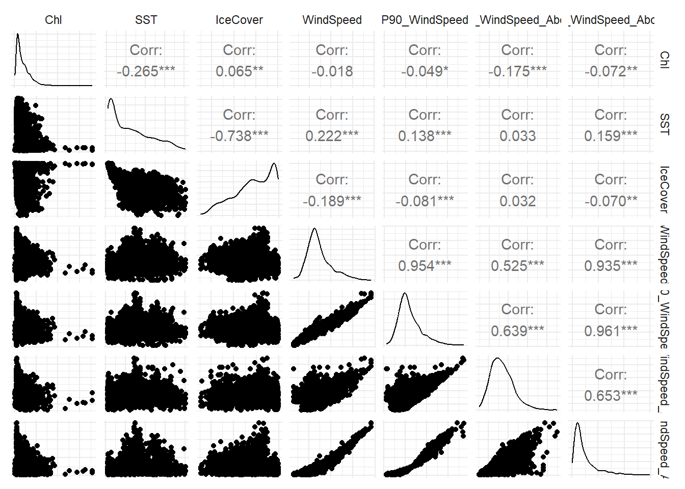

What are the environmental factors that drive chlorophyll-a (Chl-a) concentration in the Arctic Ocean?
Study sites
Data investigation
Colinearity of variable

Model Building
We fitted a Bayesian Generalised Additive Model (GAM) in brms (Bürkner 2017–2021) to explain geometric-mean chlorophyll-a (GeoMean_Chla) across 10 sites. To improve convergence and account for differing scales, both the response and all five environmental drivers (SST, IceCover, Mean_WindSpeed_Above10, Freq_WindSpeed_Above10, WindSpeed) were standardized (z-scored) prior to modelling. The standardized response was then modelled with a Student’s t likelihood for robustness to outliers, and each predictor entered as a thin-plate spline with region-specific smooths. Basic weakly-informative priors were used throughout.
Posterior inference used NUTS with 4 chains of 5 000 iterations (500 warm-up). All Rhat ≤1.01 and effective sample sizes > 1 000, indicating good convergence.
\[\begin{aligned} y_i &= z(\mathrm{Chla}_i), \quad x_{ji} = z(\mathrm{Covariate}_{j,i}),\; j=1,\dots,5, \\[6pt] y_i \mid \mu_i,\sigma,\nu &\sim t_\nu(\mu_i,\sigma), \\[6pt] \mu_i &= \eta_i, \\[4pt] \eta_i &= \alpha + f_1\bigl(\mathrm{SST}_i \mid \mathrm{Region}_i\bigr) + f_2\bigl(\mathrm{IceCover}_i \mid \mathrm{Region}_i\bigr) \\[-2pt] &\quad + f_3\bigl(\mathrm{Mean\_WindSpeed\_Above10}_i \mid \mathrm{Region}_i\bigr) + f_4\bigl(\mathrm{Freq\_WindSpeed\_Above10}_i \mid \mathrm{Region}_i\bigr) \\[-2pt] &\quad + f_5\bigl(\mathrm{WindSpeed}_i \mid \mathrm{Region}_i\bigr), \\[8pt] f_j(x\mid r) &= \sum_{k=1}^{K_j}\beta_{jkr}\,B_{jk}(x), \quad r=1,\dots,R,\; j=1,\dots,5, \\[8pt] \alpha &\sim t_{3}(0,2.5), \\[2pt] \beta_{jkr} &\sim \mathcal{N}(0,\sigma_j^{2}), \\[2pt] \sigma_j &\sim t^{+}_{3}(0,2.5),\; j=1,\dots,5, \\[2pt] \sigma &\sim t^{+}_{3}(0,2.5), \\[2pt] \nu &\sim \mathrm{Gamma}(2,0.1). \end{aligned} \]